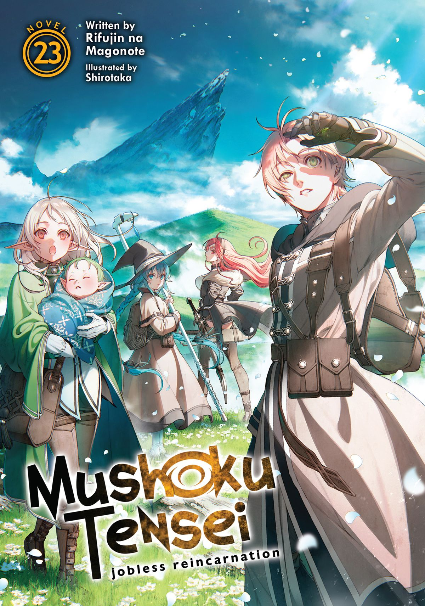
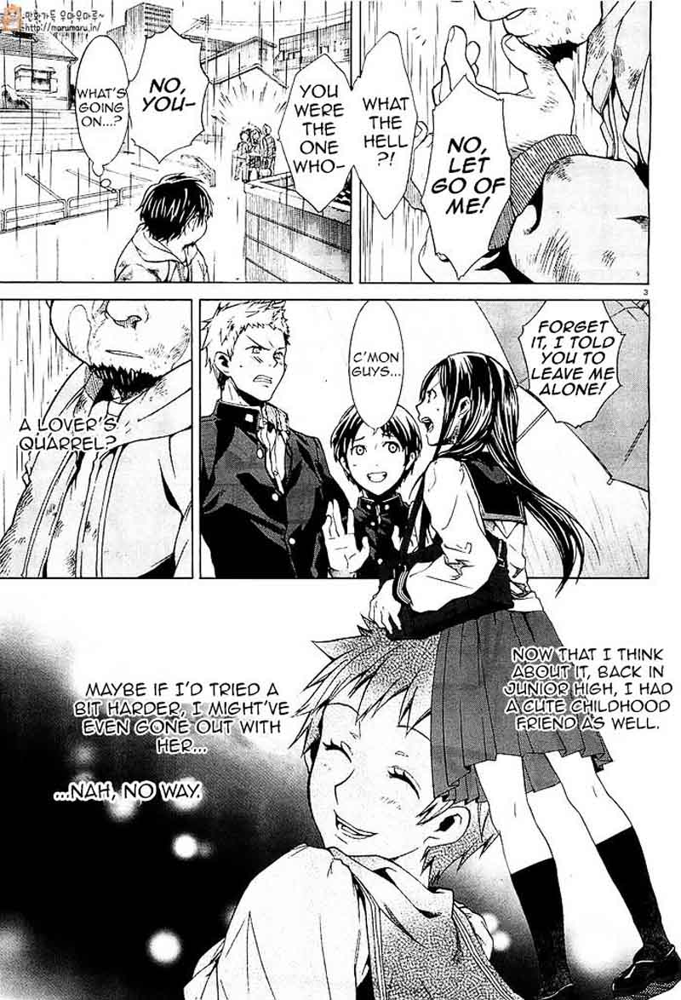

Mushoku Tensei: Isekai Ittara Honki Dasu
by Rifujin na Magonote
Synopsis
After dying in his previous life, a 34-year-old unemployed man is reincarnated as Rudeus Greyrat in a magical world. Determined to avoid repeating his past mistakes, he uses his memories from his former life to learn magic, develop his abilities, and build meaningful relationships. As he faces dangerous adventures and personal struggles, Rudeus strives to live his new life without regrets.
Chapter 1

After being rejected by society and dying in a traffic accident while trying to save someone, a 34-year-old man awakens in a fantasy world as a newborn named Rudeus Greyrat. Remembering his previous life, he decides to make the most of this second chance.
Growing up in the Greyrat household, Rudeus discovers his natural talent for magic and begins studying under his parents and a gifted tutor. Determined to change himself, he sets out on a journey of personal growth, facing challenges that will test his courage, relationships, and resolve.
— End of chapter —